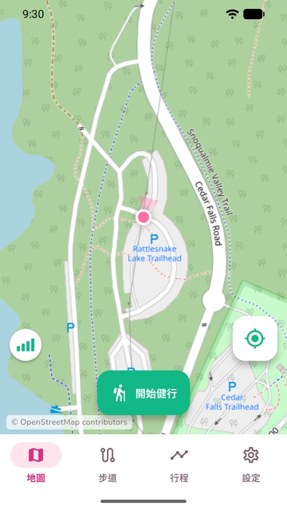
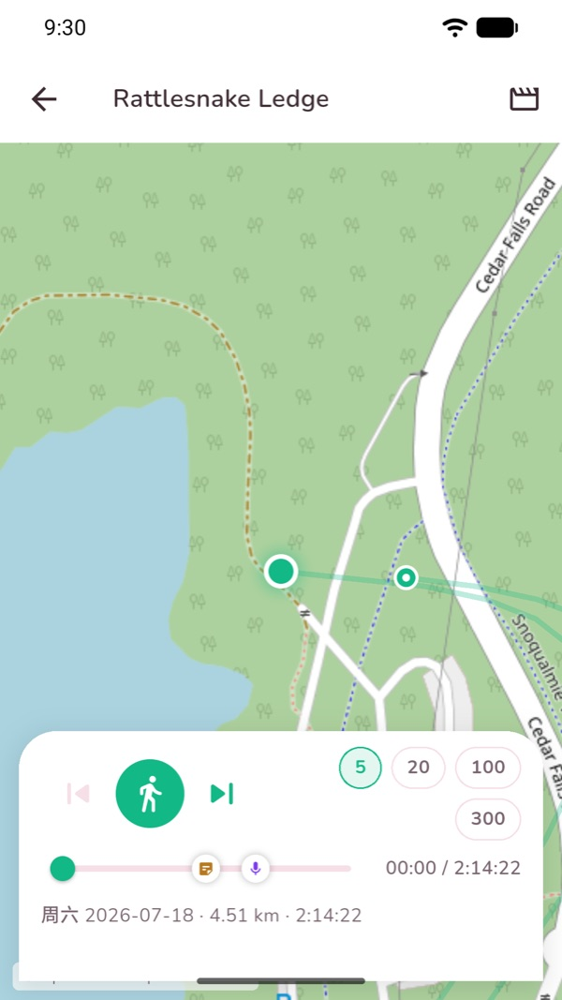
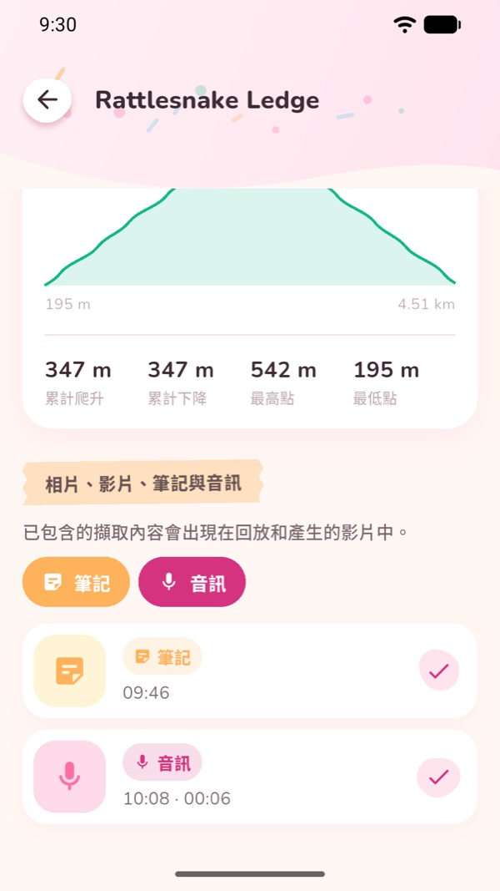
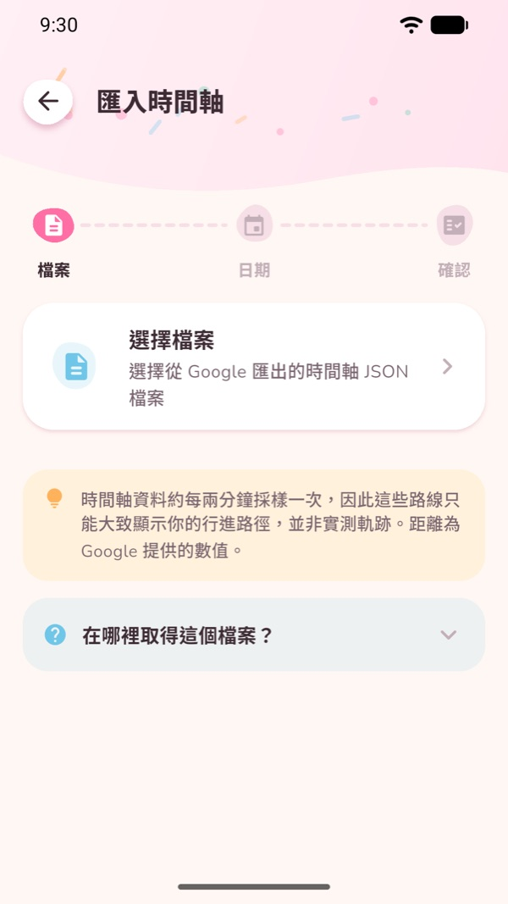
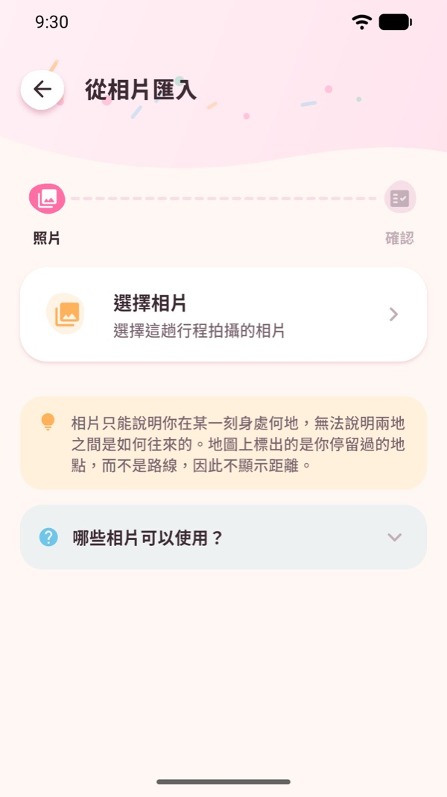
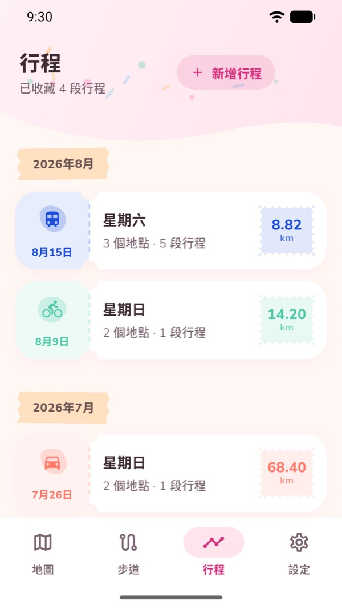
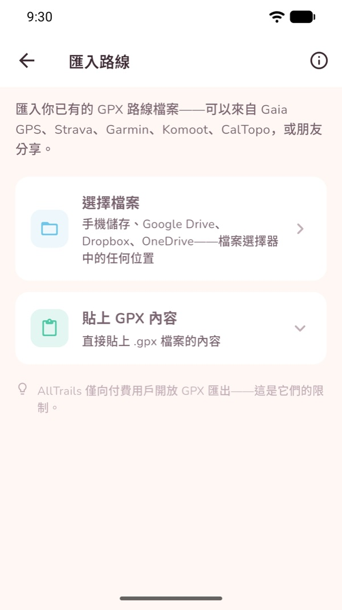

拾光旅行
走過的地方，留成永遠的回憶。
拾光旅行幫你留住走過的每一天。邊走邊記錄一次健行，或者把已經走過的行程重新找回來——然後在地圖上重看，並保存成影片。
在 Google Play 下載 不需帳號 · 不需註冊拾光旅行能做什麼
記錄健行
螢幕關閉、放進口袋、一路沒有訊號，GPS 都照樣記錄。切換到別的 App 不會中斷；萬一中途沒電，下次開啟會問你要不要接著記。
留住當時的樣子
照片、影片、語音備忘和文字筆記，邊走邊存，自動釘在路線上的那個位置。
產生行程
匯入 Google 地圖時間軸，或者挑幾張帶定位的旅行照片。兩種方式都能得到一段可以在地圖上回看的行程。
重看這一天
路線一點一點畫出來，照片在當時的位置浮現，語音在走到那裡的時候響起。
保存成影片
把健行回放匯出成 MP4——一段屬於你這一天的短片，存進相簿或隨手分享。僅限 Android。
只留在你的手機裡
不需要註冊，也不需要建立帳號。你的軌跡、照片、筆記和錄音都不會離開這台裝置。
使用方法
記錄一次健行
開啟 地圖 分頁，點 開始健行。就這麼簡單——不用選運動類型，也沒有什麼要先設定的。
走起來之後，頂部會顯示用時、距離、速度、爬升和步數。你可以鎖定螢幕把手機收起來，記錄會在背景繼續。
結束時點 停止，這次健行就會儲存到 步道 分頁裡。

加入照片、影片、筆記和語音
健行進行中，地圖上有三個按鈕：相機、麥克風 和 筆記。
照片和影片都在 App 內拍攝，所以拾光旅行從來不需要存取你的相簿。每一次拍攝都會帶上當時的位置和時間。
結束後開啟這次健行，所有瞬間都會列出來，每一則都可以單獨決定要不要出現在回放和匯出的影片裡。

看這次健行回放
開啟一次健行，點 回放。路線會從起點一路畫到終點，地圖跟著走。
你留下的瞬間會出現在進度條上。回放走到那裡時，照片滑出來、筆記展開、語音響起。
拖動進度條可以前後移動，用倍速按鈕可以跳過慢的那一段。

把回放匯出成影片
在健行頁面或回放頁面選擇匯出。拾光旅行會把回放錄成 MP4：先是一個拉開的全景，然後沿著路線飛一遍，最後再拉回來收尾。
飛行段的長度在 設定 → 回放影片長度 裡設定（15 到 60 秒），照片和筆記停留多久也在那裡調。
做好的影片會存進相簿，也可以直接從 App 裡分享。
影片匯出僅限 Android，並且只針對記錄下來的健行，不適用於行程。

用 Google 地圖時間軸產生行程
先在同一台手機上從 Google 地圖匯出時間軸：Google 地圖 → 大頭貼 → 你的時間軸 → 右上角三個點 → 位置和隱私設定 → 匯出時間軸資料，你會得到一個 Timeline.json 檔案。
回到拾光旅行，開啟 行程 分頁，點 新增行程，選擇時間軸那一項。選好檔案，選一個日期範圍，然後匯入。
你出行過的每一天都會變成一段獨立的行程，每一段路都會按出行方式用不同顏色畫出來——步行、騎車、開車、公車、捷運、火車、輕軌、渡輪、飛行。
真實的匯出檔案可能有 90 MB 甚至更大。拾光旅行是串流讀取而不是整個載入，所以介面不會卡，進度是真的，而且隨時可以取消。

用照片產生行程
在 行程 分頁選 新增行程，選照片那一項，然後挑出這趟旅行的照片。
拾光旅行會讀取每張照片裡存著的位置和時間，按順序串起來。它用的是系統相簿選擇器，所以不需要相簿權限——它只能看到你親手挑給它的那幾張，而且只讀資訊，不會複製照片。
沒有位置資訊的照片——大多數螢幕截圖、下載的圖片，以及從通訊軟體傳過來的——會被統計並告訴你，而不是悄悄丟掉。

開啟、回放和匯出行程
行程 分頁會按月份收集你匯入的每一天。
開啟其中一天，可以看到地圖、停留點和路段，以及各種出行方式各走了多遠。點 播放行程，這一天就會在地圖上走一遍，切換方式時會標出來。
每一段行程都是一個屬於你的 .geojson 檔案。匯出之後，任何地圖工具都能開啟。

匯入和匯出自己的路線
在 步道 分頁裡，你可以從 Gaia GPS、Strava、Garmin、Komoot 或 CalTopo 匯入 GPX——選檔案、從雲端硬碟拿，或者直接把文字貼進來。郵件、雲端硬碟和檔案管理器裡的 .gpx 也可以直接用拾光旅行開啟。
開啟一條步道，點 沿這條步道開始健行 就能跟著走；步道會畫在你的即時軌跡下面，偏離時會提醒你。
原路返回 會把你剛走過的路變成回去的路線。任何健行或步道都能匯出成 GPX。

地圖與離線使用
拾光旅行提供兩種底圖——街道檢視 和帶地形的 戶外檢視。兩種都不需要金鑰，對你和對我們都不需要帳號或 API key。
你看過的地圖區域會留在手機上，所以在家裡看過的地方，到了登山口沒訊號也畫得出來。GPS 記錄本身完全不需要連網。
說得準確一點：拾光旅行快取的是你瀏覽過的區域，並沒有整片區域批次下載的功能。所以出發前，最好先把要去的地方在地圖上看一遍。
常見問題
需要註冊帳號嗎？
不需要。沒有註冊，沒有登入，也不用建立帳號。開啟就能開始記錄。
沒有訊號也能用嗎？
GPS 記錄完全不需要連網。地圖圖磚需要：你之前看過的區域會留在手機上，離線也畫得出來，所以出發前先瀏覽一下路線會更好。
我的資料會上傳嗎？
不會。健行、照片、影片、筆記和語音都存在你自己的手機裡，沒有雲端同步，也沒有帳號。App 會傳送匿名的當機和診斷報告，用來修復問題。
匯入照片是不是就把整個相簿給 App 了？
不是。它用的是系統相簿選擇器，App 只會拿到你選取的那幾張照片。它讀取位置和時間，而不是複製照片，並且完全沒有相簿權限。
行程和記錄下來的健行一樣嗎？
不一樣，而且這個區別很重要。Google 時間軸大約每兩分鐘取樣一次，也不含海拔，所以行程只能告訴你去過哪裡、怎麼去的，而不是你實際走了多遠。顯示的距離是 Google 自己的資料，沒有配速也沒有步數。照片行程更是完全不顯示距離。想要真正測量出來的軌跡，請記錄一次健行，或者匯入 GPX。
行程能匯出成影片嗎？
目前還不能。影片匯出錄製的是健行回放，並且僅限 Android。行程可以在 App 內回放，也可以匯出成 GeoJSON。
支援哪些語言？
English、简体中文 和 繁體中文，長度單位可選公制或英制。
隱私
拾光旅行把你的健行、媒體和行程都存在你自己的裝置上。完整內容見隱私政策。